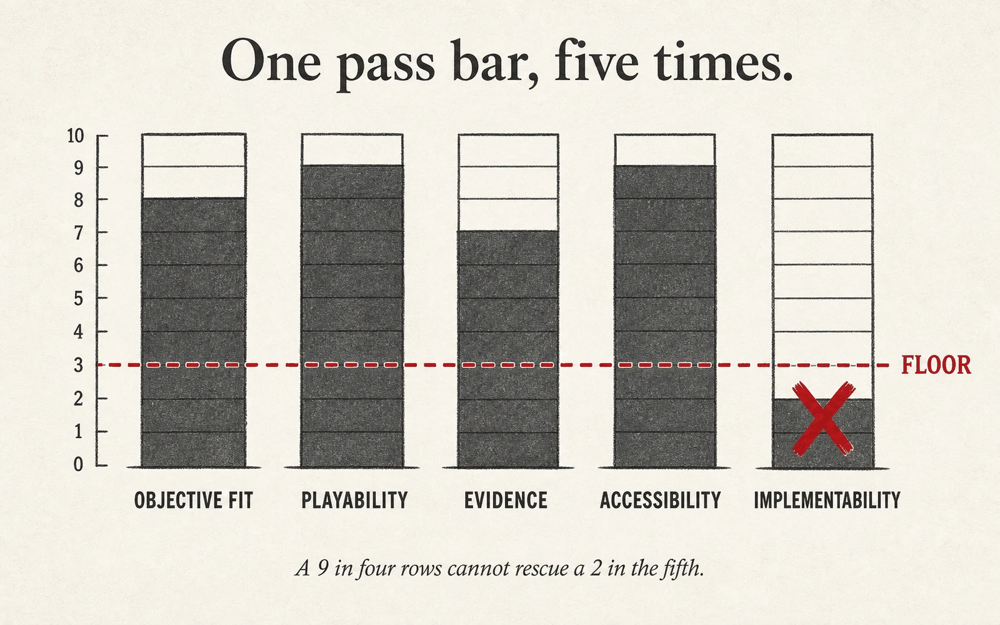

Every deliverable in this microcredential is judged against four to five criteria at four performance levels. The green column — Proficient — is the credential floor. You earn the badge by reaching Proficient on every criterion of every deliverable, not by averaging high scores.

Each row describes four observable levels. They are not grades — they are evidence targets. You do not need Exemplary to pass; you need Proficient on every row.
The green column is the microcredential floor. Missing Proficient on one criterion blocks the credential until that artifact is revised — high scores elsewhere do not compensate.
Each deliverable is scored against the rubric using the artifact itself plus a short change log. Self-assessment first, instructor assessment second, peer review between.
The rubric makes a strong claim — non-compensatory pass bar, no averaging — and therefore inherits a strong burden of proof. The status table is the honest one.
For any deliverable the cohort has submitted, an instructor can ask the model to propose ESCO / Lightcast skill tags with evidence excerpts. The instructor confirms each tag before it attaches to the learner's OBv3 assertion. The model never grades, never writes to the credential directly, and is rate-audited for acceptance-rate drift. Full design: docs/L1-ai-skill-tagging-design.md.
An Exemplary on D4 does not cover a Developing on D2. Every deliverable has a floor; every floor is required. This is the structural property that distinguishes a microcredential from a course grade.
Any artifact scored below Proficient returns to the learner with one revision path and a clear resubmission deadline. A revision that reaches Proficient earns the credit; the original is not averaged.
A one-page statement of learner, context, constraint, and the measurable shift you intend to produce. Everything downstream cites D1. A sloppy D1 compounds.
| Criterion | Emerging | Developing | Proficient | Exemplary |
|---|---|---|---|---|
| Learner specificityNamed, not "students" | "Students" or a whole course; no differentiation. | A population (e.g., "first-year residents") with one trait. | A named population with role, prior knowledge, and at least one motivational condition. | Proficient plus named variation within the population that changes design decisions. |
| Context constraintsObservable, not inferred | No constraints named, or only generic ones ("busy," "limited time"). | Two constraints named but without source or observable trigger. | Three or more context constraints, each observable and each one that will force a design decision. | Proficient plus the constraint that is most likely to be violated by a naive design, flagged. |
| Measurable shiftVerb, baseline, target | Outcome is a feeling or attitude with no measurement path. | Observable verb, but baseline or target is missing. | Observable verb, stated baseline, stated target, and a realistic window for the shift. | Proficient plus the discrimination this shift tests (performance ≠ understanding). |
| Evidence of the problemWhy now, not invented | No evidence; the problem is assumed. | Anecdote or one secondary source; could be generalized. | At least one primary-source data point (observation, artifact, interview) that the problem exists in this context. | Proficient plus a disconfirming check — what would make this not the problem? |
| Revision responseLog + rationale | No revision log, or cosmetic edits only. | One revision with what changed but not why. | One revision based on specific peer feedback; what changed and why, in ≤3 sentences. | Proficient plus one piece of feedback the author chose not to apply and the reason. |
Two to four objectives mapped to mechanics with rationale, risks, and a declined alternative. D2 is the spine of the design — it is cited in every session from S4 onward.
| Criterion | Emerging | Developing | Proficient | Exemplary |
|---|---|---|---|---|
| Objective specificityVerb, condition, criterion | Objectives are topics, not behaviors ("fractions," "triage"). | Observable verbs but no condition or criterion. | Every objective has verb + condition + success criterion; types are named (skill / concept / judgment / disposition). | Proficient plus objectives tagged to Bloom or equivalent taxonomy with justification for the tag. |
| Mechanic rationaleWhy this, not another | Mechanic named without rationale; "it will be fun." | Rationale is generic (e.g., "engaging") without link to the objective type. | Each row explains why this mechanic fits this objective type and this learner context. | Proficient plus a citation to a worked case (Casebook handout or external) supporting the choice. |
| Risk identificationNamed, specific | No risks, or "might not work." | Generic risks (too hard, too long). | Each row names at least one risk specific to the mechanic-objective pair and how it would show up in play. | Proficient plus the leading indicator that would tell you the risk is materializing during playtest. |
| Declined alternativeThe honesty column | No declined row. | A declined row exists but reads as a straw man. | At least one objective the author was tempted to include, named, with a one-sentence reason for exclusion. | Proficient plus the condition under which the declined row would re-enter scope. |
| Traceability to D1Constraint-linked | D2 does not reference D1. | One row references a D1 element. | Every row cites at least one specific D1 context constraint that shaped the mechanic choice. | Proficient plus a row where a D1 constraint forced the author to reject their first mechanic choice. |
A paper prototype playable at the table in five minutes, plus the facilitator guide that lets a colleague run it without you. Playability is the rubric bar.
| Criterion | Emerging | Developing | Proficient | Exemplary |
|---|---|---|---|---|
| PlayabilityColleague-run, 5 min to loop | Author must explain to start. Loop not reached. | Runs with author present; stalls on one rule. | A colleague picks it up from the guide and reaches the full loop within 5 minutes, no author present. | Proficient plus two independent runners reach consistent decisions on the same scenario. |
| Loop fidelityMatches the D2 row | Prototype demonstrates a different mechanic than D2. | Core mechanic present but the feedback channel differs from D2. | Prototype implements the mechanic, feedback kind, and one risk case named in the chosen D2 row. | Proficient plus the prototype reveals a D2 assumption the author did not know they were making. |
| Facilitator guide completenessSetup · rules · edges · debrief | No guide, or rules only. | Setup + rules; no edge cases or debrief prompts. | Setup, rules, at least three edge cases with resolutions, and three debrief prompts targeting the learning objective. | Proficient plus a facilitator calibration note — the one rule runners disagree on and how to hold the line. |
| Artifact qualityNo placeholder play | Cards/boards have "TBD" or lorem text in play area. | Real content but inconsistent (one theme, many voices). | All play-area text is real content at final voice; art placeholders clearly marked and do not block play. | Proficient plus content audited for accuracy by a domain expert or a cited source. |
| Iteration log3+ cycles | No log; one pass only. | Two cycles logged; changes not tied to observations. | Three or more cycles; each entry names what was observed, what changed, and what the next test will check. | Proficient plus one cycle where the author reverted a change after evidence against it. |
Protocol, three or more target-learner sessions, observations separated from interpretation, and an evidence-ranked revision plan. Not peers. Target learners.
| Criterion | Emerging | Developing | Proficient | Exemplary |
|---|---|---|---|---|
| Protocol designTarget learners, consent | Peers playtested; no protocol document. | Mix of peers and target learners; protocol thin. | Three or more target-learner sessions; written protocol with consent language, task brief, capture method, and debrief script. | Proficient plus the protocol evolved between sessions and the change is documented. |
| Evidence baseCapture + traceability | Notes from memory; no raw capture. | One capture mode (notes only, or video only). | At least two capture modes (e.g., observation notes + artifacts + recording); every finding in the report is traceable to a specific capture moment. | Proficient plus structured event logging against the S10 taxonomy. |
| Observation vs. interpretationSeparated, labeled | Observations and interpretations mixed; no labels. | Labels present but inconsistent; interpretations imported as observations. | Every finding is written as an observation first (what was seen/heard), then one interpretation, with the boundary visible on the page. | Proficient plus at least one observation the author cannot yet interpret — flagged as open. |
| Finding taxonomySeverity × domain | Findings as a flat list; no severity or domain. | One dimension (severity or domain), not both. | Every finding tagged with severity (stopper / major / minor) and domain (mechanic / UX / content / ethics / tech). | Proficient plus inter-rater check — a peer tagged a sample of findings and disagreements are discussed. |
| Revision planImpact × effort, cut line | "Fix everything" or no plan. | Ranked list; no explicit cut line; effort not estimated. | Backlog with impact (1–5) and effort (1–5) per item, a drawn cut line for S11, and a one-sentence reason for each decline. | Proficient plus the item the author most wanted to do but cut, and the condition that would bring it above the line. |
State machine, event map, asset list, and a Three.js bridge for one hero scene. D5 is what a developer could build from. It absorbs D1–D4 into a single implementation artifact.
| Criterion | Emerging | Developing | Proficient | Exemplary |
|---|---|---|---|---|
| State machineOne page, fully guarded | Prose description; no diagram. | Diagram exists; states or transitions unguarded. | Single-page diagram; every state has entry and exit; every transition has event + guard; two designers reading it produce the same mental model. | Proficient plus a runnable reference (Codex-generated state-machine runtime) passing the included assertions. |
| Event → feedback mapEvery cell specified | Prose; no table. | Table exists; >20% of cells blank. | All cells filled or marked "none" intentionally; events tagged with reward_kind against the S4 taxonomy. | Proficient plus a gap audit (Codex lint or manual) showing zero silent cells. |
| Three.js bridgeScene purpose, graph, budget | 3D gestured at; no spec. | Scene graph present; no camera, input, or perf budget. | One hero scene fully specified: purpose, graph, camera, input, entry/exit, assets with budgets, and a named 2D fallback condition. | Proficient plus a scaffold produced from the spec with the bridge handout's prompt, running on a device-floor target. |
| Coherence with D1–D4Cited, not restated | D5 reads as if D1–D4 do not exist. | Prior deliverables cited once or twice. | Every major spec decision cites the D1 constraint, D2 row, D3 iteration, or D4 finding that forced it; divergences are called out. | Proficient plus a "changed my mind" annex — one D2 decision the author reversed between D3 and D5 and why. |
| Known limitsAbove-the-line honesty | No limits section, or "no known issues." | Limits list is generic ("needs more testing"). | A "Known Limits" annex drawn from the S11 backlog items above the line; each with the condition under which it would be resolved. | Proficient plus a limit the author considers disqualifying for a next audience the game should not yet be used with. |
The AI-enhanced Educational Game Design microcredential is issued when all five deliverables reach Proficient or above on every rubric criterion. The credential declares that the holder can take a learning problem from statement to implementation-ready spec, with evidence at every step.
Five criteria × five deliverables. The credential requires Proficient on all 25. Resubmission is available once per deliverable within the course window.
Badge metadata (Open Badges 2.0 / CLR-compatible) publishes the rubric URL as criteria, the learner's artifact set as evidence, and the issuer profile as verification.